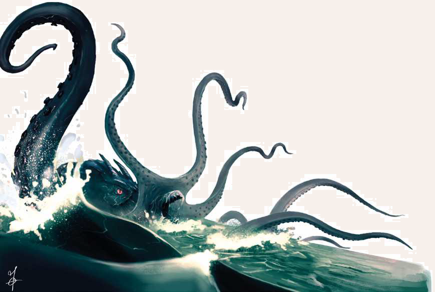

Der Krakenmolch gehört zu den größten und gefürchtetsten Schrecken der See. Mit seinen acht alles zermalmenden Fangarmen und seinem schnabelartigen mit Reißzähnen gespickten Maul lehrt er selbst die wehrhaftesten Meeresbewohner und Seeleute das Fürchten. Selbst gewaltige Galeeren und die linken Drachenschiffe der Thorwaler sind vor seinen Angriffen nicht gefeit, denn trotz seiner gigantischen Ausmaße bewegt sich der Krakenmolch im Wasser schnell und geschickt. Doch selbst ufernahe Siedlungen sind vor der Amphibie nicht sicher, denn indem sie jeweils zwei ihrer Tentakel verdrillt, ist sie auch zum Landgang fähig. So dringt das Ungeheuer zur Jagd gelegentlich auch bis ins Landesinnere vor und erwählt sich einen See oder eine wassergefüllte Kaverne als neue Heimat. Obwohl ein Krakenmolch enorme Ausmaße annimmt, passt sein Leib doch selbst durch scheinbar enge Lücken hindurch. Dies liegt daran, dass die meisten Teile seines Körpers, von der robusten Haut einmal abgesehen, weich und dehnbar sind. Glückt eine Jagd auf den Krakenmolch, so werden vor allem seine beiden knochenweißen Stirnhörner, die ihm ein dämonisches Aussehen verleihen, als Trophäen geschätzt. Das zähe Fleisch hingegen ist erst nach kundiger Zubereitung überhaupt genießbar und selbst dann eher für experimentierfreudige Gaumen geeignet. Neben den großen Exemplaren gibt es auch noch eine Untergattung, den Zwergkrakenmolch. Auch er ist gefährlich, da er klein genug ist, um sich etwa in Brunnenschächten zu verstecken und ahnungslose Opfer in die Tiefe zu ziehen. Zwar ist er weniger stark als sein großer Verwandter, doch um mit einem oder mehreren Zweibeinern fertig zu werden, reicht seine Kraft meistens aus.
Verbreitung
Der Krakenmolch wurde bereits in allen Meeren gesichtet, vom Perlenmeer bis zu Iirns Ozean und in den meisten halbwegs zugänglichen Küstengebieten gesichtet.
Trotz seiner amphibischen Natur scheint er das offene Wasser dem Ufer deutlich vorzuziehen. Dank der Möglichkeit, sich auch an Land fortzubewegen, haben einige Exemplare es aber auch bis in tiefe Seen und Tümpel geschafft.
Die meisten Gelehrten gehen von einem natürlichen Ursprung des Krakenmolchs aus, verschiedenen Sagen zufolge soll das Ungeheuer jedoch eine Chimäre sein und aus Gewässern jenseits des Efferdwalls stammen.
Seine Erschaffung muss aber lange zurückliegen, denn magische und karmale Analysen offenbaren keine dämonischen Rückstände. Andere Quellen behaupten hingegen, dass der Krakenmolch vom Tridekapus abstammt, einer Kreatur mit dreizehn Armen, die mit dem Namenlosen im Bunde stehen soll.
Lebensweise
Die großen, aber seltsam seelenlosen Augen und die Neigung, dem brennenden Hunger jegliche Taktik und Fluchtbereitschaft unterzuordnen, zeugen von einer bestenfalls tierischen Intelligenz. Über seine übrige Lebensweise ist kaum etwas bekannt, außer dass er zur Fortplanzung fähig ist. Sein einziger Daseinszweck scheint das Fressen zu sein, und darin ist er wirklich gut. Kaum ein Wesen, das kleiner ist als er selbst, steht nicht auf seinem Speiseplan.
Giftige Tiere meidet er, selbst Zweibeiner an Land werden als Beute betrachtet und angegriffen.
Krakenmolch
Größe: 4,00 bis 5,00 Schritt großer Rumpf; 6,00 bis 8,00 Schritt lange Fangarme
Gewicht: 900 bis 1.200 Stein
Eigenschaften:
MU 15
KL 06
IN 13
CH 08
FF 13
GE 12
KO 35
KK 36
LeP: 350
AsP: -
KaP: -
INI: 14+1W6
SK: 1
ZK: 7
GS: 2/9 (an Land/im Wasser)
VW: 6
Fangarm:
AT: 13
TP: 1W6+8
RW: lang
Biss:
AT: 10
TP: 3W6+6
RW: kurz
RS/BE: 1/0
Aktionen: 4 (max.1 x Biss, max. 3 x Fangarm)
Vor- und Nachteile: Dunkelsicht II
Sonderfertigkeiten: Klammergriff (Fangarm; kann der Gegner sich nicht erfolgreich verteidigen, hält der Krakenmolch ihn fest. So lange der Gegner festgehalten wird, leidet er unter den Status Fixiert und Eingeengt.
Ab der nächsten KR muss der Krakenmolch keine AT mehr würfeln, sondern erzeugt durch Quetschen SP in Höhe der ausgewürfelten TP des Angriffs.
Alternativ kann das Wesen 1 Aktion aufwenden, um das Opfer zu seinem Maul zu heben.
In der folgenden KR kann er dann zubeißen. Diese Attacke gelingt automatisch.
Die Verteidigung des Angreifers sinkt während des Rests der KR, in der der Biss stattindet, auf 0.
Der Klammergriff kann nur gegen Gegner kleinerer Größenkategorien verwendet werden.
Um sich aus dem Klammergriff zu lösen, ist eine gelungene Vergleichsprobe auf Kraftakt (Ziehen & Zerren) nötig.
Der Haltegriff kann nur gegen Gegner kleinerer Größenkategorien verwendet werden.
Mittels einer freien Aktion kann der Krakenmolch den Gehaltenen loslassen.
Sollte der Krakenmolch sein Opfer angehoben haben, erleidet es daraufhin den Status Liegend, sofern ihm nicht eine Probe auf Körperbeherrschung (Kampfmanöver) gelingt.)
• Mächtiger Schlag (Fangarm; bei erfolgreichem Angriff müssen Gegner der Größenkategorie mittel und kleiner eine Probe auf Kraftakt erschwert um 8 bestehen, sofern sie nicht ausgewichen sind; ansonsten erhalten sie den Status Liegend)
• Tentakelschwung (Fangarm; ist der Krakenmolch mindestens eine Größenkategorie größer als seine Ziele, kann er mit einem Tentakelschwung mehrere Ziele zu Fall bringen. Gegen diesen Angriff kann man nur ausweichen. Ist die Verteidigung misslungen, stürzt der Gegner und erleidet den Status Liegend.
Durch den Fall erleidet man 1W3 SP. Ein solcher Angriff kann nur gegen Ziele neben oder vor dem angreifenden Wesen ausgeführt werden. Die Attacke ist um 2 pro Ziel erschwert.)
• Verbeißen (Biss; der Krakenmolch führt einen Biss-Angriff aus. Kann der gelungene Angriff nicht verteidigt werden, so hat er sich festgebissen. In den nachfolgenden KR gelingt die Biss-Attacke automatisch, ohne dass der Meister würfeln muss.
Jede KR richtet der Verbeißen-Angriff +1 TP an (in der ersten KR noch keinen zusätzlichen TP, in der 2. KR +1TP, in der 3. KR +2 TP usw.). Die TP werden wie üblich ausgewürfelt. Der Gegner erhält den Status Fixiert. Die Verteidigung des Molches sinkt, während er beißt, auf 0.
Der Krakenmolch kann am Ende einer KR entscheiden loszulassen. Dieser Angriff ist um 2 erschwert.)
Talente:
Klettern 2 (15/12/36),
Körperbeherrschung 5 (12/12/35),
Kraftakt 12 (35/36/36),
Schwimmen 9 (12/35/36),
Selbstbeherrschung 10 (15/15/35),
Sinnesschärfe 7 (6/13/13),
Verbergen 10 (15/13/12),
Einschüchtern 13 (15/13/8),
Willenskraft 4 (15/13/8)
Anzahl: 1
Größenkategorie: riesig
Typus: übernatürliches Wesen, nicht humanoid
Kampfverhalten: Der Krakenmolch versucht zu Kampfbeginn, mit 1W3 Fangarmen ein Opfer zu umklammern und an sein Maul zu führen. Anschließend beißt er es solange, bis es stirbt. Mit den anderen Fangarmen versucht er, die restlichen Gegner abzuwehren.
Flucht: Sobald der Krakenmolch 6 Fangarme oder 50% seiner LeP am Rumpf verloren hat, lieht er
Beute: 90 Rationen Fleisch pro abgetrenntem Tentakel (zäh), 200 Rationen Rumpfleisch (ungenießbar), Treibgut (im Verdauungstrakt; Wert: 1W6x3W20 Silbertaler), Trophäe (Stirnhörner, 25 Silbertaler)
Sonderregeln: Tentakel abschlagen: Um einem Krakenmolch ein Tentakel abzuschlagen, muss vor der Attacke ein Angriff auf das Tentakel angekündigt werden. Nur Waffen mit einer scharfen Klinge können ein Tentakel durchdringen.
Dazu sind 12 SP notwendig, die innerhalb von 1 KR erzielt werden müssen, da man nach kurzer Zeit die angeschlagene Stelle des Fangarms nicht noch einmal treffen kann.
| LeP-Verlust | Schmerz | |
|---|---|---|
| 30 LeP (¾) | +1 Schmerz | |
| 20 LeP (½) | +1 Schmerz | |
| 10 LeP (¼) | +1 Schmerz | |
| 5 LeP und weniger | +1 Schmerz |
| Fischen & Angeln | (Wasserungeheuer) | |
|---|---|---|
| QS1 | Der Krakenmolch kann sich auch an Land aufhalten und bewegen. | |
| QS2 | Wenn der Krakenmolch 6 Fangarme verloren hat, lieht er üblicherweise. | |
| QS3 | Reibt sich ein Opfer mit Öl oder einer anderen glitschigen Substanz ein, kann der Krakenmolch es deutlich schwerer festhalten (Klammergriff-Angriff für den Krakenmolch um 6 erschwert, die Probe auf Kraftakt (Ziehen & Zerren), um den Klammerangriff zu lösen, ist zudem um 2 erleichtert). |